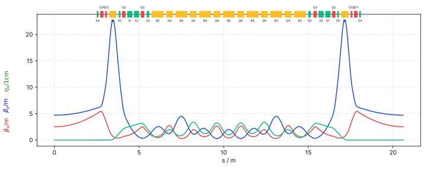

Summary of Hwang 5 Sexts
Data is generated by elegant
Info
| Title | Hwang 5 Sexts |
| File | hwang_5sexts.lte |
| Author | Ji-Gwang Hwang |
| Description |
Optical Functions Plot
Global Machine & Lattice Parameter
| Parameter | Value |
|---|---|
| Energy $E$ | 2.5 |
| Periodicity $N$ | nan |
| Cell length / m | nan |
| Cell Angle / rad | nan |
| Cell Angle / degree | nan |
| Circumference | nan |
| Parameter | Value |
|---|---|
| Natural Emittance / rad m | 9.36e-11 |
| Energy loss per turn $U_0$ / Mev | 0.0255 |
| Momentum compaction factor $\alpha_c$ | 0.000109 |
| $\alpha_{c2}$ | 0.000892 |
| $J_{\delta}$ | 0.402 |
| $\tau_{\delta}$ | 0.0335 |
Detailed Lattice Parameter
| Parameter | Value |
|---|---|
| $Q_x$ | 2.88 |
| $dnux/dp$ | -3.7 |
| $dnux/dp 2$ | 4.58 |
| $dnux/dp 3$ | -297 |
| max($\beta_x$) | 5.45 |
| min($\beta_x$) | 0.299 |
| mean($\beta_x$) | 1.97 |
| max($\eta_x$) | 0.0338 |
| $J_x$ | 2.6 |
| $\tau_x$ | 0.00519 |
| Parameter | Value |
|---|---|
| $Q_y$ | 1.95 |
| $dnuy/dp$ | -5.83 |
| $dnuy/dp 2$ | 104 |
| $dnuy/dp 3$ | -3.84e+04 |
| max($\beta_y$) | 22.7 |
| min($\beta_y$) | 0.297 |
| mean($\beta_y$) | 4.33 |
| max($\eta_y$) | 0 |
| $J_y$ | 1 |
| $\tau_y$ | 0.0135 |